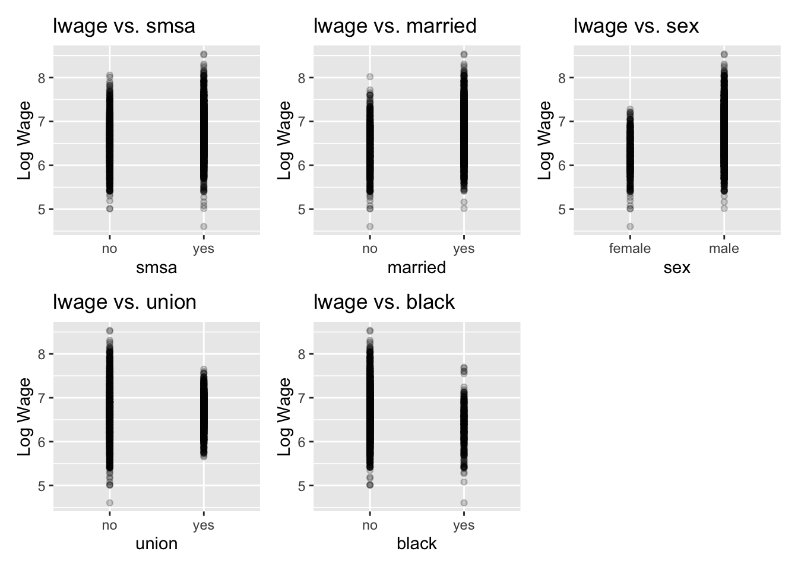
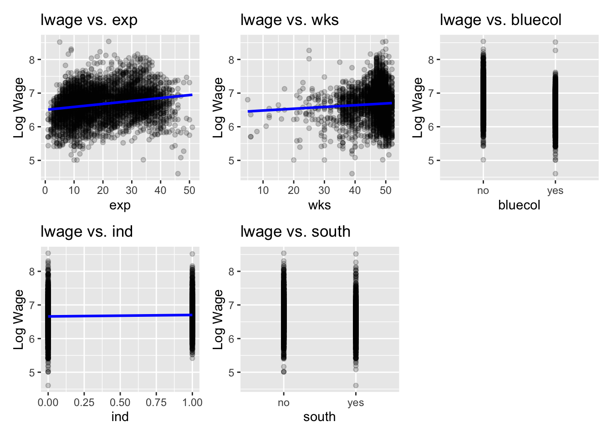
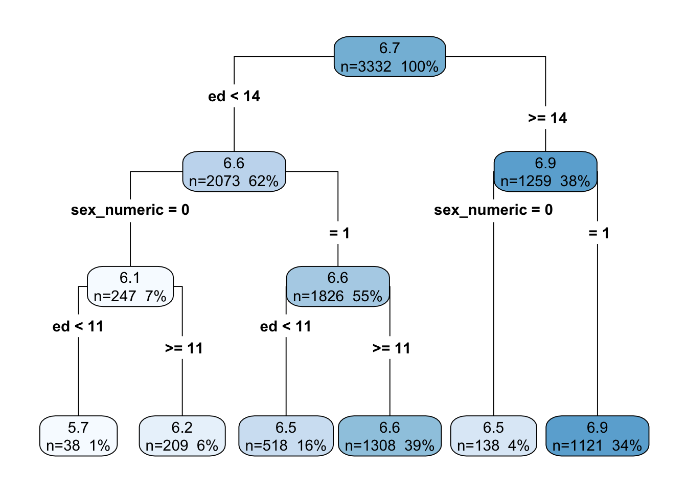

# List of predictors you want to plot against lwageselected_predictors1 <-c( "smsa", "married", "sex", "union", "black")selected_predictors2 <-c("exp", "wks", "bluecol", "ind", "south")# "exp", "wks", "bluecol", "ind", "south", "smsa", "married", "sex", "union", "black"plots_list1 <-list()plots_list2 <-list()for(predictor in selected_predictors1) { plots_list1[[predictor]] <-ggplot(Wages, aes(x =!!sym(predictor), y = lwage)) +geom_point(alpha=0.2) +geom_smooth(method="lm", se=FALSE, color="blue") +labs(title=paste("lwage vs.", predictor), x=predictor, y="Log Wage")}for(predictor in selected_predictors2) { plots_list2[[predictor]] <-ggplot(Wages, aes(x =!!sym(predictor), y = lwage)) +geom_point(alpha=0.2) +geom_smooth(method="lm", se=FALSE, color="blue") +labs(title=paste("lwage vs.", predictor), x=predictor, y="Log Wage")}# Combine and display the plotscombined_plot1 <-wrap_plots(plots_list1, ncol =3)combined_plot2 <-wrap_plots(plots_list2, ncol =3)# Display the combined plotscombined_plot1
`geom_smooth()` using formula = 'y ~ x'
`geom_smooth()` using formula = 'y ~ x'
`geom_smooth()` using formula = 'y ~ x'
`geom_smooth()` using formula = 'y ~ x'
`geom_smooth()` using formula = 'y ~ x'

combined_plot2
`geom_smooth()` using formula = 'y ~ x'
`geom_smooth()` using formula = 'y ~ x'
`geom_smooth()` using formula = 'y ~ x'
`geom_smooth()` using formula = 'y ~ x'
`geom_smooth()` using formula = 'y ~ x'

# Choose predictors "exp", "wks", "bluecol", "ind", "south", "smsa", "married", "sex", "union", "black"selected_predictors <-c( "exp", "bluecol", "smsa", "married", "sex", "black")# Dynamically build the formula with polynomial terms for 'exp' and 'ed'formula_str <-paste("lwage ~", paste(selected_predictors, collapse=" + "))# Convert string to formulaformula <-as.formula(formula_str)# Fit the linear regression model with polynomial termsmodel <-lm(formula, data=Wages)summary(model)
# Interpret the model output# Look at the coefficients to understand the effect of each predictor on lwage# Pay special attention to the predictors with non-linear terms (e.g., I(predictor1^2))# Assess the model's overall fit (e.g., R-squared) and individual predictors' significance (p-values)
The linear regression model demonstrates that experience, blue-collar job status, living in an SMSA, marital status, gender, and race significantly impact the logarithm of wages. Specifically, experience, being in an SMSA, and being married are associated with higher wages, while being in a blue-collar job or being black is linked to lower wages. Gender also plays a crucial role, with males earning significantly more than females, all else being equal. Although the model explains about 31.82% of the variability in log wages, suggesting it captures key factors affecting wages, there remains a substantial portion of the variability unexplained, indicating potential for model improvement or the existence of other influential factors not included in the model.
b)
The prediction model, with a Multiple R-squared of 0.3182, indicates that it can explain a moderate proportion of the variance in logarithmic wages based on the predictors used, though a significant amount of variability remains unaccounted for. The Residual Standard Error (RSE) of 0.3814 points to the average deviation of the observed values from the fitted values, suggesting the model’s predictions are reasonably close to the actual data, but there’s room for improvement. The significant p-values for all predictors confirm their relevance in explaining wage differences, ensuring that the model’s insights are statistically robust. However, to enhance predictive accuracy and account for more variance in wages, exploring additional predictors, interaction terms, or non-linear relationships could be beneficial.
c)
This R function f implements a basic version of the k-Nearest Neighbors (k-NN) algorithm for regression. Here’s a line-by-line explanation:
f=function(x0,x,y,K=20): Defines a function f with inputs x0 (a new data point for which we want to predict the outcome), x (the matrix of features for the training data), y (the vector of outcomes for the training data), and K=20 (the number of nearest neighbors to consider, with a default value of 20).
n <- nrow(x): Determines the number of observations in the training data by counting the rows in x.
p <- ncol(x): Determines the number of features (predictors) in the training data by counting the columns in x.
d <- matrix(0,n,1): Initializes a matrix d with n rows and 1 column filled with zeros. This is a placeholder for the distances between the new data point x0 and each point in the training data x.
d <- sqrt(apply((x-matrix(x0,n,p,byrow=TRUE))^2,1,sum)): Calculates the Euclidean distance between x0 and each observation in x. This is done by subtracting x0 from each row in x (broadcasting x0 across n rows), squaring the differences, summing these squared differences across columns (apply(…,1,sum)), and taking the square root of these sums.
o <- order(d)[1:K]: Orders the distances d in ascending order and selects the indices of the K smallest distances. These indices correspond to the K nearest neighbors of x0 in the training data.
ypred <- mean(y[o]): Calculates the mean outcome y of the K nearest neighbors identified in the previous step. This mean value serves as the prediction for the new data point x0.
return(ypred): Returns the predicted outcome for the new data point x0.
In summary, this function implements the k-Nearest Neighbors algorithm for regression, predicting the outcome for a new observation based on the average outcome of its K nearest neighbors in the feature space.
d)
# Correcting the function ff <-function(x0, x, y, K =20) { n <-nrow(x) p <-ncol(x) d <-matrix(0, n, 1) d <-sqrt(apply((x -matrix(x0, n, p, byrow =TRUE))^2, 1, sum)) o <-order(d)[1:K] ypred <-mean(y[o])return(ypred)}# Encoding 'sex' as a numeric variable where male = 1 and female = 0Wages$sex_numeric <-ifelse(Wages$sex =="male", 1, 0)# Splitting the dataset into training and test setsset.seed(123) # For reproducibilityindices <-sample(1:nrow(Wages), size =0.8*nrow(Wages), replace =FALSE) # 80% for trainingtrain_data <- Wages[indices, ]test_data <- Wages[-indices, ]# Extracting the chosen predictors ('sex_numeric' and 'ed') and the target variablex_train <-as.matrix(train_data[, c("sex_numeric", "ed")])y_train <- train_data$lwagex_test <-as.matrix(test_data[, c("sex_numeric", "ed")])y_test <- test_data$lwage# Initialize vectors to store predictionspredictions_k10 <-numeric(length(y_test))predictions_k20 <-numeric(length(y_test))# Loop over the test set for K = 10 and K = 20for (i in1:nrow(x_test)) { predictions_k10[i] <-f(x0 = x_test[i, ], x = x_train, y = y_train, K =10) predictions_k20[i] <-f(x0 = x_test[i, ], x = x_train, y = y_train, K =20)}# Evaluate the predictions using Mean Squared Error (MSE)mse_k10 <-mean((predictions_k10 - y_test)^2)mse_k20 <-mean((predictions_k20 - y_test)^2)print(paste("MSE for K=10:", mse_k10))
[1] "MSE for K=10: 0.156565330368002"
print(paste("MSE for K=20:", mse_k20))
[1] "MSE for K=20: 0.14880810005982"
e)
# Define a function for k-fold cross-validation on the k-NN modelcross_validate_knn <-function(K, folds, x, y) { fold_size <-nrow(x) / folds mse_list <-numeric(folds)for (i in1:folds) {# Define indices for the validation set val_indices <- (((i -1) * fold_size +1):(i * fold_size))# Split the data into training and validation sets x_train_cv <- x[-val_indices, ] y_train_cv <- y[-val_indices] x_val_cv <- x[val_indices, ] y_val_cv <- y[val_indices]# Predict using the current value of K predictions <-sapply(1:nrow(x_val_cv), function(j) f(x0 = x_val_cv[j, ], x = x_train_cv, y = y_train_cv, K = K))# Calculate MSE for the current fold and store it mse_list[i] <-mean((predictions - y_val_cv)^2) }# Return the average MSE across all foldsreturn(mean(mse_list))}# Range of K values to testK_values <-seq(15, 30, by =2) # Testing K values from 1 to 30, skipping by 2folds <-3# Number of folds in k-fold cross-validation# Prepare the matrix of predictors and the target variable from the training datax_train_cv <-as.matrix(train_data[, c("sex_numeric", "ed")])y_train_cv <- train_data$lwage# Calculate average MSE for each Kmse_results <-sapply(K_values, function(K) cross_validate_knn(K, folds, x_train_cv, y_train_cv))# Identify the optimal K with the lowest MSEoptimal_K <- K_values[which.min(mse_results)]optimal_MSE <-min(mse_results)print(paste("Optimal K:", optimal_K))
[1] "Optimal K: 29"
print(paste("Optimal MSE:", optimal_MSE))
[1] "Optimal MSE: 0.164698507305595"
# You can then use this optimal K to make predictions and evaluate them as before
f)
# Assuming 'train_data' and 'test_data' are already definedx_train <-as.matrix(train_data[, c("sex_numeric", "ed")])y_train <- train_data$lwagex_test <-as.matrix(test_data[, c("sex_numeric", "ed")])y_test <- test_data$lwage# For LASSOset.seed(123) # For reproducibilitycv_lasso <-cv.glmnet(x_train, y_train, alpha =1)# For Ridge Regressioncv_ridge <-cv.glmnet(x_train, y_train, alpha =0)# Predictions for LASSOpredictions_lasso <-predict(cv_lasso, newx = x_test, s ="lambda.min")# Predictions for Ridgepredictions_ridge <-predict(cv_ridge, newx = x_test, s ="lambda.min")# Calculate MSEmse_lasso <-mean((predictions_lasso - y_test)^2)mse_ridge <-mean((predictions_ridge - y_test)^2)print(paste("LASSO MSE:", mse_lasso))
[1] "LASSO MSE: 0.150351729238396"
print(paste("Ridge MSE:", mse_ridge))
[1] "Ridge MSE: 0.150565228936139"
g)
# Fit the GAMgam_model <-gam(lwage ~s(ed) + sex_numeric, data = train_data)# Summary of the modelsummary(gam_model)
# Make predictions on the test setpredictions_gam <-predict(gam_model, newdata = test_data)# Calculate MSEmse_gam <-mean((predictions_gam - test_data$lwage)^2)print(paste("GAM MSE:", mse_gam))
[1] "GAM MSE: 0.149868440980557"
h)
# Using 'lwage' as the response variable and 'sex_numeric' and 'ed' as predictorstree_model <-rpart(lwage ~ sex_numeric + ed, data=train_data, method="anova")rpart.plot(tree_model, type=4, extra=101)# Making predictions on the test setpredictions_tree <-predict(tree_model, newdata=test_data)# Evaluate the predictions, e.g., using Mean Squared Error (MSE)mse_tree <-mean((predictions_tree - test_data$lwage)^2)print(paste("MSE for the tree:", mse_tree))
[1] "MSE for the tree: 0.153347527679205"
# Prune the treepruned_tree <-prune(tree_model, cp=tree_model$cptable[which.min(tree_model$cptable[,"xerror"]),"CP"])# Plot the pruned treerpart.plot(pruned_tree, type=4, extra=101)

# Evaluate the pruned tree's predictionspredictions_pruned <-predict(pruned_tree, newdata=test_data)mse_pruned <-mean((predictions_pruned - test_data$lwage)^2)print(paste("MSE for the pruned tree:", mse_pruned))
[1] "MSE for the pruned tree: 0.153347527679205"
Problem 2
a)
b)
c)
d)
e)
Session info
Leave this part unchanged. The cell below prints which packages and versions were used for creating the html-file.